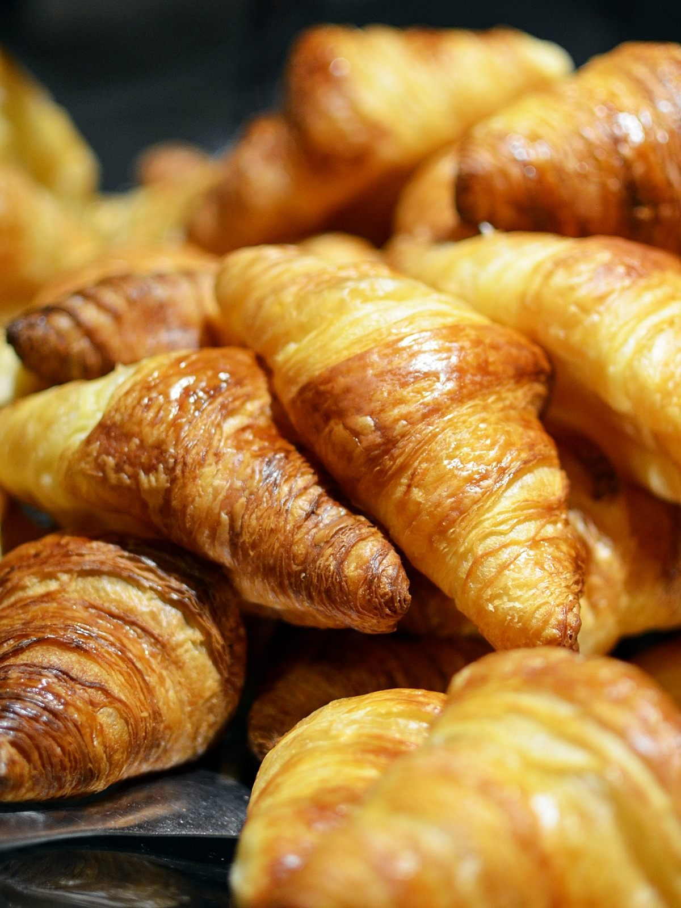
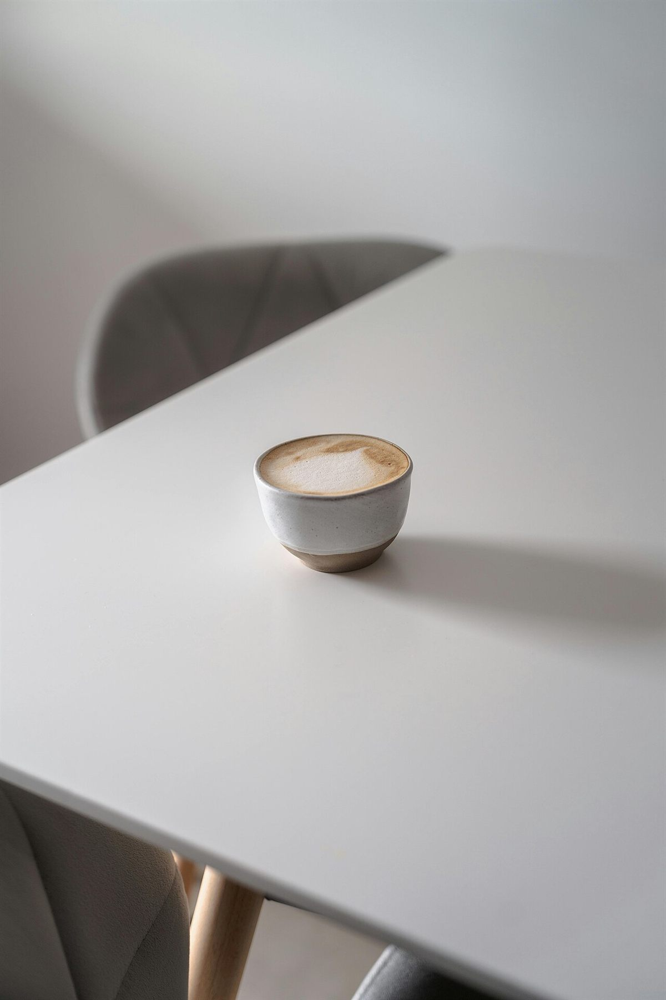
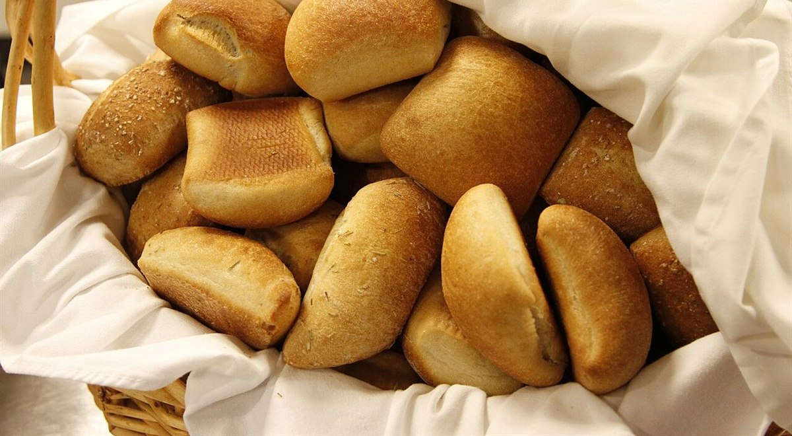
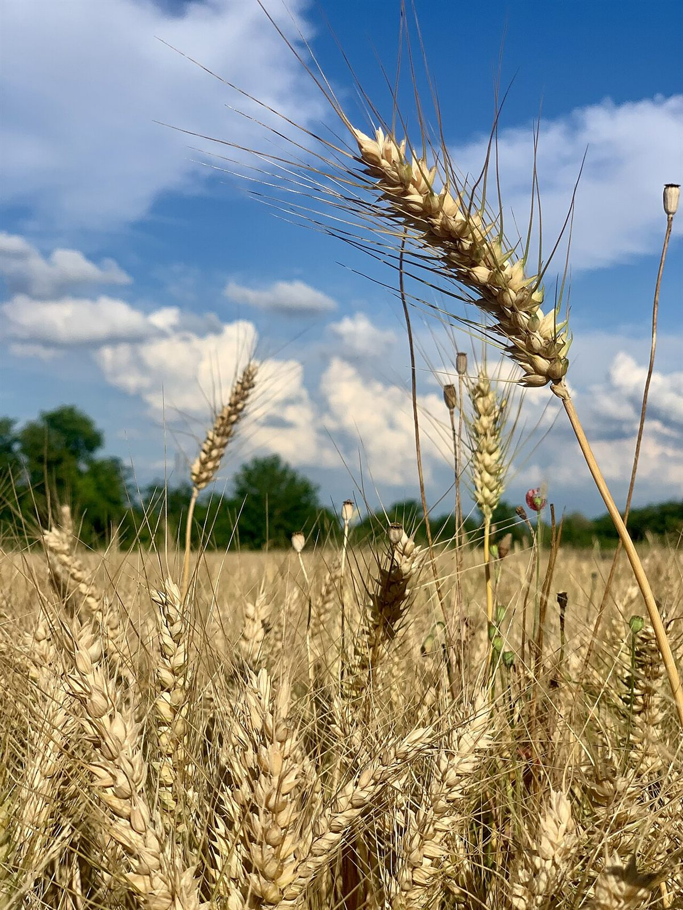
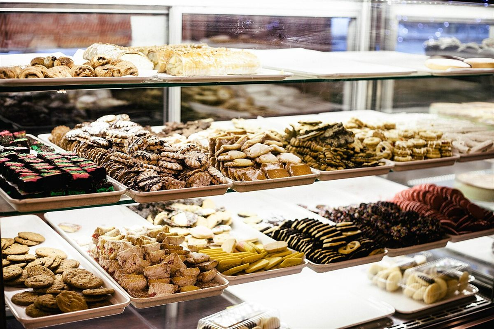
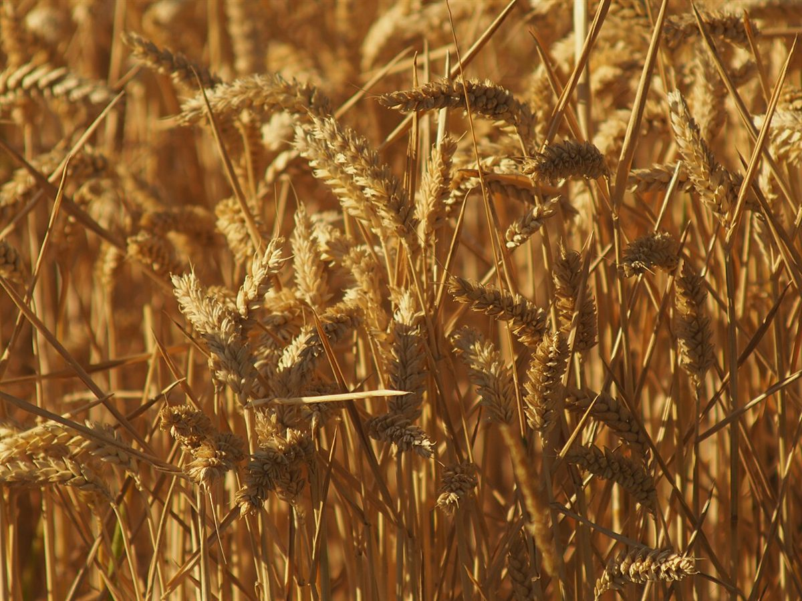

京都府宮津市
ちいさな窓辺で、ひと休み。
パンとコーヒーのある時間を、のぞいてみませんか。立ち寄る前の小さな楽しみとして、このページをご覧ください。
キャッチコピーは制作側の仮案です。


掲載の写真はフリー素材のイメージです。お店の実際の店内・商品ではありません。日本国外や他地域で撮影されたもの、撮影地が不明なものを含みます。
ひと休みのしかた
お店で実際にできることは準備中(お問い合わせください)です。ここでは、立ち寄る時間のイメージを描いています。
- 01
ふらっと寄る
仕事帰りや散歩の途中、ふと足が向く。そんな気軽さを思い描いています。
- 02
ゆっくり座る
窓の外をぼんやり眺めながら、少しだけ時間を止めてみる。そんな休憩を想像しています。
- 03
持ち帰る
帰り道や家での時間にも、ひと息つく楽しみが続いていく。そんな場面を描いています。




お店の情報
- 営業時間
- 準備中(お問い合わせください)
- 定休日
- 準備中(お問い合わせください)
- 席数
- 準備中(お問い合わせください)
- 駐車場
- 準備中(お問い合わせください)
- 住所
- 〒626-0034 京都府宮津市滝馬